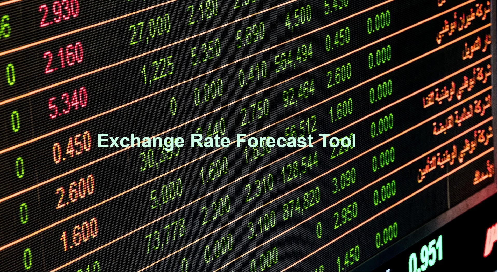

Hosted on Streamlit
Project Overview
This project was inspired by two seperate tasks given to me during my previous role as a Digital Transformation Business Analyst. The first task was to track the exchange rate of the countries in which we operated in. The fluctuation of exchange rate affected the price of which certain products were sold at in these countries. The second task was to forecast the expected number of sales in each of these countries. The currencies which are analysed in this tool are: South African Rand, Mauritian Rupee, Kenyan Shilling, Nigerian Naira, Mozambique Meticals, and Botswana Pula.
Data Collection
Exchangerate.host is used to collect the exchange rate data for each currency. They provide a simple and effective free service for current and historical foreign exchange rates. The servie is trusted and the data is sourced from financial data providers and banks, including the European Central Bank. The data collection process started on 12 March 2022. A Google Apps Script is used to access the latest rates API endpoint. This script is excuted daily between 5am and 6am. Then another script is used to write the latest rate of each currency in a Google Sheet.The script is executed everyday between 6am and 7am. Google's Apps Script is a cloud-based JavaScript platform that allows for integration with and automation of tasks across Google products [not sponsored advertising :)]
Timeseries Forecasting
A timeseries forecast analysis was performed on the data collected from the Google sheet. This analysis was performed on Google Colab notebook. This notebook is currently publicly available to see the steps performed - from determining stationarity and making the non-stationary series stationary.